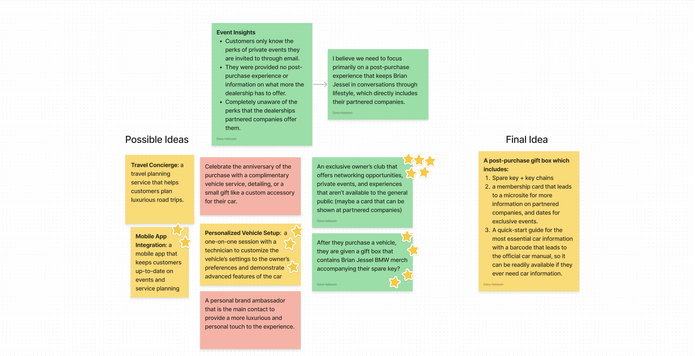

Overview
Problem Discovery in Luxury Auto Sales
In Spring 2023, I embarked on a challenging project in my Interaction Design course led by Professor Ron Wakary. The task was to help a local business combat post-COVID customer retention issues. My team—Nishant, Luke, Justin, Alex—and I discovered that luxury car dealerships, like Brian Jessel BMW, were particularly struggling due to rising inflation affecting consumer spending.
Research Complexities
Navigating Complexities
Our team's main hurdle was the broad scope of issues faced by the dealership. We needed to narrow down our focus to create an impactful solution. To gather insights, I spearheaded a participatory workshop, directly engaging with both new and existing customers to understand their perspectives on luxury car ownership in economically challenging times..

I then began preparing a set of quick, fast-paced activities for the customers to perform, to keep them engaged.

The workshop led us to these takeaways...

Deepening the Investigation
While the participatory workshop provided valuable insights, we recognized that they were insufficient for pinpointing a definitive solution. To bridge this gap, I initiated a deeper dive into customer awareness at a private customer event. Engaging in direct conversations with several customers, it became evident that there was a lack of awareness about the dealership's value-added services. Most customers perceived Brian Jessel BMW solely as a purveyor of luxury vehicles, unaware of the exclusive benefits such as special deals with partner restaurants and hotels. This discovery was crucial—it highlighted the need for a strategy that would illuminate these hidden perks to the customers.
Collaborative Synthesis
Strategizing a Post-Purchase Narrative
Reconvening after the event, my team and I deliberated over the fresh insights I had collected. We recognized a collective need for a post-purchase experience that would keep the conversation about Brian Jessel BMW alive. It was essential to craft an experience that not only retained customers but also showcased the network of partnered businesses. This approach aimed to spotlight the dealership's full spectrum of offerings, transcending the traditional luxury car ownership model.
Taking in all the insights I gathered, we all brain-dumped a bunch of possible ideas. We favorited the ideas we liked the most, and then we reconvened and decided on how we could combine all our liked ideas. This led us to creating the post-purchase giftbox.
Result
Introducing The Brian Jessel Experience
Given to new customers, the gift box provides new Brian Jessel BMW customers with a memorable touchpoint, leaving a lasting impression to both inspire brand loyalty and ensure that Brian Jessel BMW stays prominent in customer conversations about their cars and ahead of their competitors.
The box includes their spare key, accompanied by their membership card, which is shown close-up along with its microsite. Beneath it they can find their key chains and the quick-start guide.


Takeaways
This project was full of ups and downs, but here is what I learned.
When I started the Brian Jessel BMW project, I thought the best approach would be to add more services or make the buying process simpler. But soon, I realized that what really makes a difference is giving customers a unique experience that feels personal. This led us to create the Brian Jessel BMW Experience—a special gift box for new customers.
This project taught me how important it is to be flexible, open to pivoting directions, and how important user-research is. Initially, I was set on my ideas, but user feedback showed they weren’t really what customers wanted or needed, but what i thought they did. Listening to that feedback and being willing to pivot quickly helped us find a much better solution that truly connected with customers. This approach didn’t just fix a problem—it made the experience delightful in a new way.